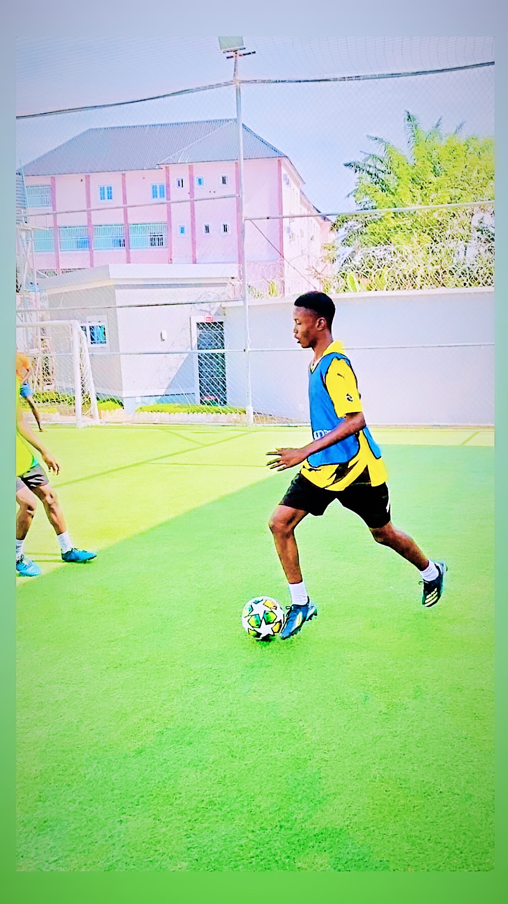
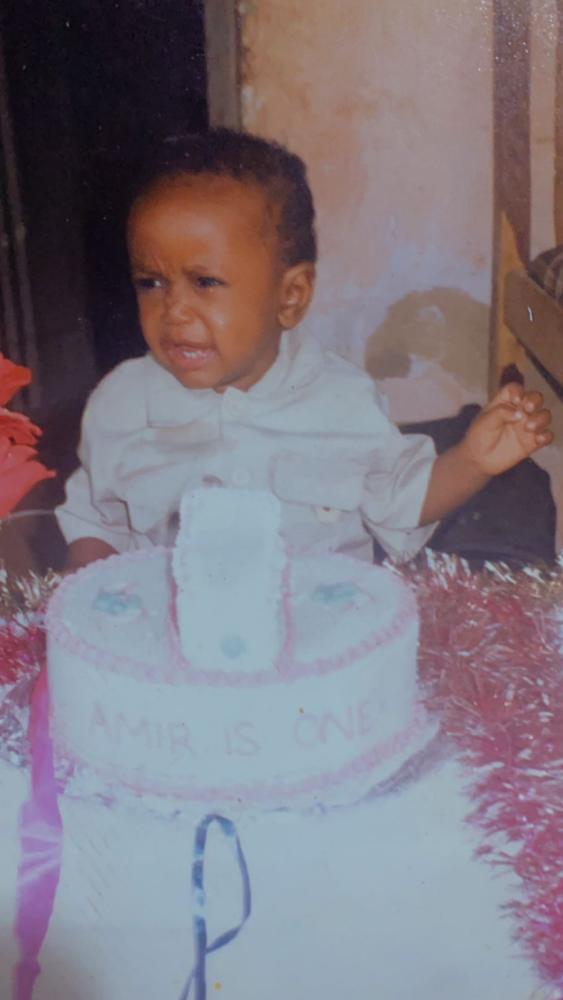
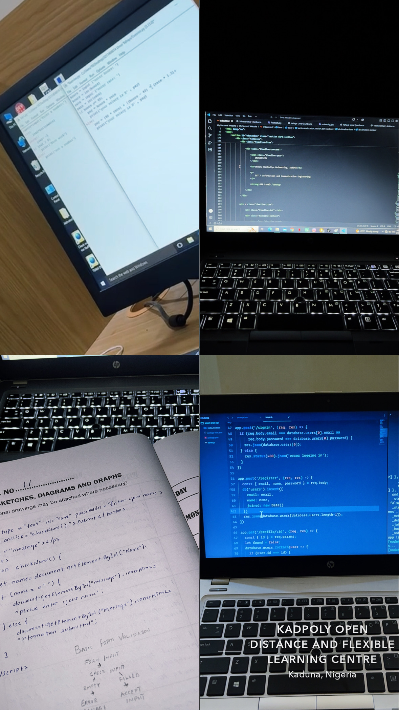

WELCOME TO MY WORLD
I'm a 500-level ICT student passionate about technology, web development, football and continuous self-improvement.
Level
Field of Study
Web Technologies
Football Lover
GET TO KNOW ME
I'm a passionate and determined ICT student who enjoys learning new things, exploring technology and developing my skills. I'm curious, hardworking and always interested in improving myself.
My interest in technology has led me into web development, where I enjoy creating websites using HTML, CSS and JavaScript. I enjoy turning ideas into webpages that people can see and interact with.
Outside technology, football is a major part of my interests. I enjoy playing football, watching matches and following the sport.
I believe that learning is a continuous process. I try to improve myself by learning from experience, practising new skills and taking on challenges that help me grow.
MY ACADEMIC BACKGROUND
ICT / Information and Communication Engineering
500 LevelCurrently developing my knowledge in information technology, programming and web development.
Kaduna, Nigeria
My secondary school education helped build my academic foundation and personal development.
Kaduna, Nigeria
This was where my early academic journey began and where I developed some of the basic skills that shaped my education.
WHAT I CAN DO
Creating the structure and content of webpages using HTML elements, links, images, forms and sections.
Designing attractive layouts, responsive pages, cards, navigation bars and modern interfaces.
Adding interaction, functions, events and dynamic content to webpages using JavaScript.
Building websites that adjust properly to phones, tablets and computers.
WHAT I WORK WITH
Creating websites using HTML, CSS and JavaScript while practising modern web development techniques.
Designing webpages that can adjust to different screen sizes including phones, tablets and computers.
Creating clean layouts, navigation sections, information cards and attractive webpage designs.
Improving webpage layouts, fixing basic errors, updating content and practising better designs.
MY FUTURE
My goal is to become a professional web developer and build useful, creative and modern digital experiences.
I want to continue learning new technologies, improve my programming skills and work on projects that solve real problems.
I also have a strong passion for football and hope to continue developing my abilities both in technology and on the football field.
My long-term goal is to keep developing myself, gain practical experience and use my skills to create useful digital solutions.
MY TECHNICAL JOURNEY
I started learning how websites are structured using HTML elements, headings, paragraphs, links, images and forms.
I learned how to style webpages, create layouts, use Flexbox and Grid, and make websites responsive.
I started using JavaScript to add interaction, functions, events and dynamic content to webpages.
I practise my knowledge by creating personal websites and other small web development projects.
MY WORK
A personal website created to introduce myself, showcase my interests, education, skills and personal journey.
Practical HTML, CSS and JavaScript exercises completed while learning web development during my SIWES training.
MY EXPERIENCE
Completed practical training focused on HTML, CSS, JavaScript and basic website development.
Developed practical experience by building and testing different webpages and personal projects.
Practised my skills by creating personal websites and experimenting with different designs.
I continue to learn new techniques and improve my technical skills through regular practice.

MY PASSION
Football is one of my favourite things outside technology. I enjoy playing football, watching matches and following football news and competitions.
Football gives me an opportunity to stay active, challenge myself and enjoy time with other people who share the same passion for the game.
MEMORIES & MOMENTS


WHAT DRIVES ME
I believe there is always something new to learn.
I believe consistent effort leads to improvement.
I enjoy turning ideas into something people can see and interact with.
I always look for ways to improve my skills and myself.
LET'S CONNECT
Have a project idea, question or simply want to connect? Feel free to reach out to me through any of the platforms below.